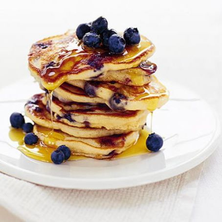

Pancakes!
Veggie
Cinnamon Spelt Pancakes with Creamy Maple Marscapone
Ingredients
- 2 cups spelt flour
- 2 tablespoons brown sugar
- 1 tablespoon baking powder
- 2 teaspoon cinnamon
- 3/4 teaspoon salt
- 1 3/4 cups of milk
- 1 teaspoon vanilla extract
- 1/3 cup marscapone
- 1/3 cup maple syrup

Method
- Combine all of the dry ingredients in one bowl. Whisk together.
- Combine all of the wet ingredients in a separate bowl. Whisk together.
- Combine the wet and dry ingredients, whisk gently until incorporated. Add more milk if necessary for a runny consistency.
- Heat a nonstick pan over medium heat. When it’s hot, pour 1/3 cup of batter in at a time. Cook for 3 minutes, or until the edges are dry and the top has bubbles, before flipping. Cook for a few more minutes, or until both sides are golden.
- When all the pancakes are done, mix the mascarpone and maple syrup together until smooth.
- Serve the pancakes with the maple topping, and extra maple syrup.
American Blueberry Pancakes
Ingredients
- 200g self-raising flour
- 1 teaspoon baking powder
- 1 egg
- 300ml milk
- knob of butter
- 150g pack of blueberries
- sunflower oil or butter for cooking
- golden or maple syrup

Method
- Mix together 200g self-raising flour, 1 tsp baking powder and a pinch of salt in a large bowl.
- Beat 1 egg with 300ml milk, make a well in the centre of the dry ingredients and whisk in the milk to make a thick smooth batter.
- Beat in a knob of melted butter, and gently stir in half of the 150g pack of blueberries.
- Heat a teaspoon of sunflower oil or small knob of butter in a large non-stick frying pan.
- Drop a large tablespoonful of the batter per pancake into the pan to make pancakes about 7.5cm across. Make three or four pancakes at a time.
- Cook for about 3 minutes over a medium heat until small bubbles appear on the surface of each pancake, then turn and cook another 2-3 minutes until golden.
- Cover with kitchen paper to keep warm while you use up the rest of the batter.
- Serve with golden or maple syrup and the rest of the blueberries.